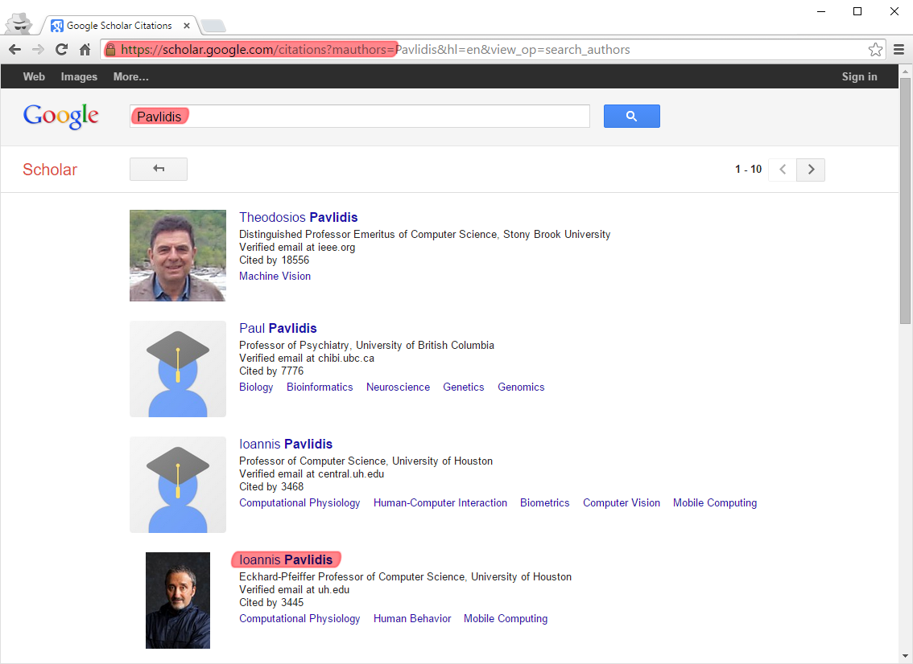
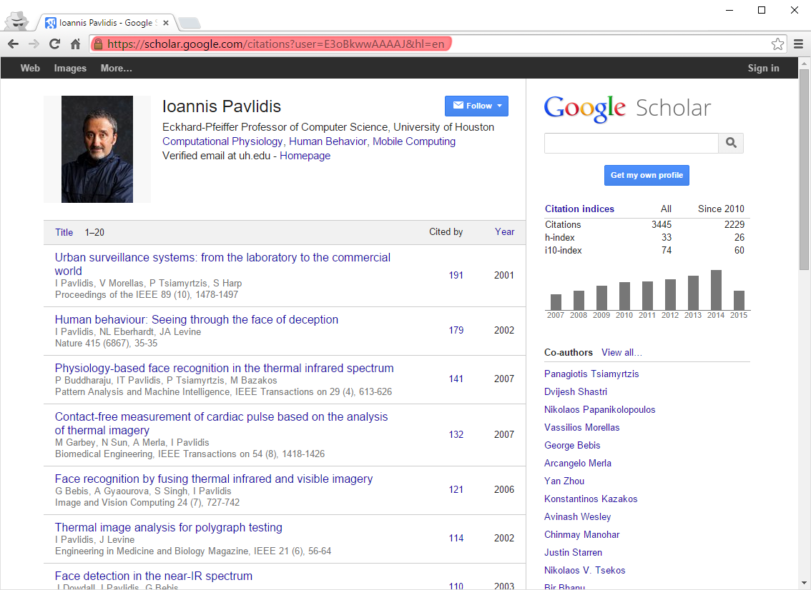

Scholar Plot
Menu
Scholar Plot
Scholar Compare
About
Support
Contact
How to Find the Google Scholar URL of an Individual
1
. You can find the Google Scholar who you are looking for from the Google Scholar web page (
Here
).
2
. Select a scholar from the results below.

3
. The Google Scholar
URL
is shown below.
